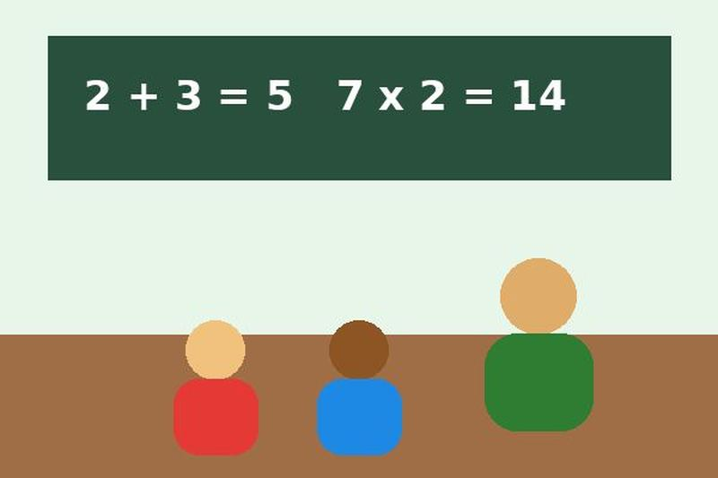
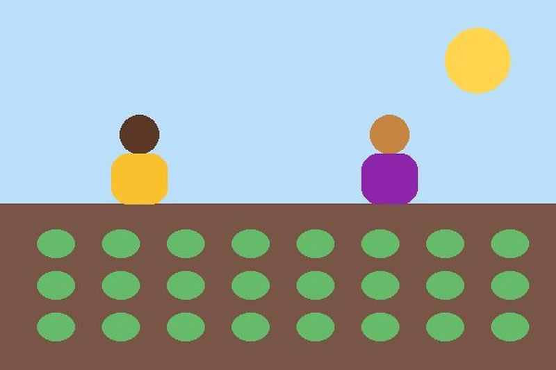

Reforço Escolar

Rodas de leitura e plantão de dúvidas de matemática no contraturno.
Atuamos em educação, meio ambiente e tecnologia. Você pode ajudar doando ou sendo voluntário.

Rodas de leitura e plantão de dúvidas de matemática no contraturno.

Plantio coletivo e oficinas de culinária saudável.
Lógica de programação e criação de sites para jovens de 13 a 17 anos.
Meta: 180 kits escolares.
| Destino | Percentual |
|---|---|
| Atividades educativas | 68% |
| Alimentação | 22% |
| Administração | 10% |
Sim, enviamos o recibo por e-mail.